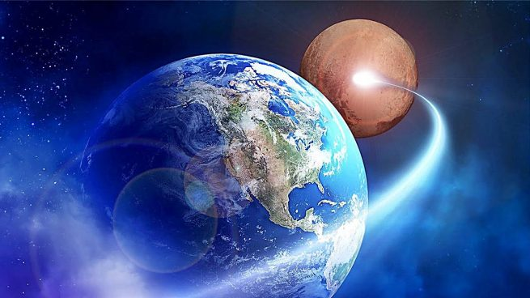

La raíz de esta perturbación colectiva la encontramos en 1800, cuando el escritor británico Samuel Rowbotham publicó un pasquín de delirios en forma de libro llamado "Astronomía Zetética (escéptica): la Tierra no es un globo". .
El manuscrito tuvo tanto éxito entre las masas que sus seguidores ofrecieron 500 libras a aquel que pudiese demostrar la curvatura de la Tierra. Aceptó el envite un señor llamado Alfred Russell Wallace, quien fue al canal de Bedford a 'plantar' su telescopio, una sábana y dos discos rojos que, como explica Scientific American, usaría como punto de referencia. Como estáis imaginando, Wallace demostró una vez más que nuestro planeta es redondo. A pesar de ello, los seguidores de Rowbotham hicieron lo que hacen los magufos de hoy: obviar la evidencia y seguir a su bola. Confundido y atónito, Wallace cobró sus 500 libras y se largó asegurando que había sido la experiencia más frustrante de su vida.
Pero no hay que irse tan lejos para ver tan graves muestras de analfabetismo. Este mismo año presenciamos como algunas celebridades reconocieron sin vergüenza que eran seguidores de esta terrible hipótesis. Una de ellas fue Tila Tequila, celebrity norteamericana que se preguntaba en Twitter que"por qué si la tierra es redonda los aviones pueden aterrizar sin estrellarse". Claro, que también piensa que es un ángel, un agente de la CIA, un robot, inmortal y que Dios está hecho de queso. Otra de las perlitas nos la dejó el rapero B.o.B, quien, entre otras cosas, va pregonando por ahí que la NASA ha trucado todas sus fotos para engañarnos. Además le dio cierta caña en una de sus canciones al célebre científico Neil DeGrasse Tyson, ya que asegura que está pagado por los magnates para que nos creamos las "mentiras de la Ciencia". Por suerte Tyson goza de muy buen humor, y le respondió con su propia medicina: encargando a su sobrino que le rapeara unas sabias palabrillas a su oponente.